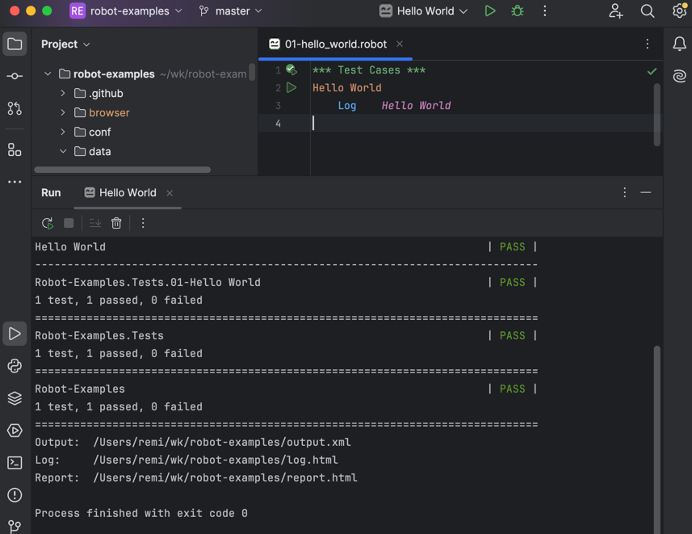
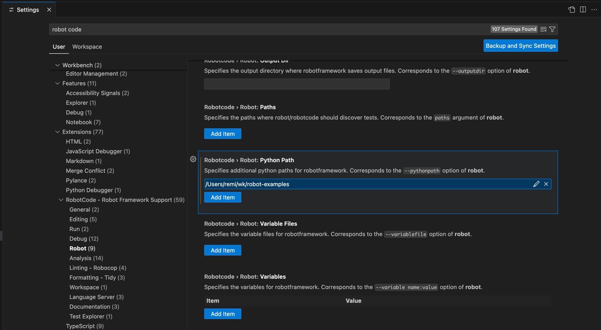
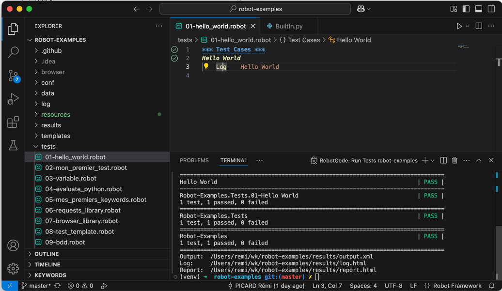

Configuration des IDEs¶
Pour améliorer votre productivité lors du développement de tests Robot Framework, il est essentiel de configurer correctement votre environnement de développement. Cette section vous guide dans la configuration de PyCharm et VSCode.
Configuration de PyCharm¶
PyCharm offre un excellent support pour Robot Framework avec des plugins dédiés.
Suivez les étapes présentées par Set up your IDE.
En résumé :
- Installer PyCharm Community Edition
- Installer l'extension
Hyper RobotFramework Support
Choisir le bon plugin
Ne pas installer Robot Framework Language Server qui n'est pas compatible Robot Framework 7+
Autre plugin à tester
Robot Code sortie en 2025
Fonctionnalités disponibles dans PyCharm¶
- ✅ Coloration syntaxique complète
- ✅ Auto-complétion des mots-clés
- ✅ Navigation vers les définitions
- ✅ Refactoring des mots-clés
- ✅ Exécution directe des tests
- ✅ Débogage des tests

Configuration de VSCode¶
VSCode avec les bonnes extensions offre une excellente expérience de développement pour Robot Framework.
Suivez les étapes présentées par Set up your IDE.
En résumé :
- Installer VS Code
- Installer l'extension Robot Code
Choisir le bon plugin
Ne pas installer Robot Framework Language Server qui n'est pas compatible Robot Framework 7+
Configurer le Python Path dans les options RobotCode :

Fonctionnalités disponibles dans VSCode¶
- ✅ Coloration syntaxique avancée
- ✅ Auto-complétion intelligente
- ✅ Validation en temps réel
- ✅ Navigation vers les définitions
- ✅ Outline de la structure du fichier
- ✅ Exécution directe des tests
- ✅ Intégration terminal

Snippets utiles pour VSCode¶
Créez le fichier .vscode/robotframework.code-snippets :
{
"Robot Test Case": {
"prefix": "test",
"body": [
"${1:Test Case Name}",
" [Documentation] ${2:Test description}",
" ${3:# Test steps here}",
" Log ${4:Test completed}"
],
"description": "Create a new Robot Framework test case"
},
"Robot Keyword": {
"prefix": "keyword",
"body": [
"${1:Keyword Name}",
" [Documentation] ${2:Keyword description}",
" [Arguments] ${3:\\${arg1}}",
" ${4:# Keyword implementation}",
" Log ${5:Keyword executed}"
],
"description": "Create a new Robot Framework keyword"
}
}
Pour utiliser ces snippets : actionnez l'IntelliSense (Ctrl+Space ou ⌃Space).
Conseils pour optimiser votre workflow¶
Raccourcis utiles
PyCharm:
Ctrl+B: Aller à la définitionAlt+Enter: Actions rapides
VSCode:
Ctrl+Shift+P: Palette de commandesF12: Aller à la définitionCtrl+: Terminal intégré
Formatage automatique
Activez le formatage automatique dans votre IDE pour maintenir une syntaxe cohérente dans vos fichiers Robot Framework.
Attention aux chemins
Assurez-vous que les chemins vers votre environnement virtuel Python sont corrects dans la configuration de votre IDE.
Prochaines étapes¶
Maintenant que votre environnement de développement est configuré, vous êtes prêt à créer des tests plus complexes et à utiliser toutes les fonctionnalités avancées de Robot Framework.
Dans la prochaine section, nous allons mettre en pratique vos connaissances avec un exercice complet de test d'API REST.